방송통신기사 (2004-03-07 기출문제)
1과목: 디지털 전자회로
1. 30:1의 리플계수기를 만들려면 최소한 몇 개의 플립-플롭(filp-flop)이 필요한가?
- 5개
- 10개
- 15개
- 30개
(정답률: 알수없음)

2. 다음 3변수 카르노도가 나타내는 함수는?
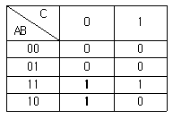
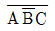
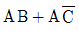
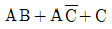
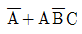
(정답률: 알수없음)
3. 2n개의 입력신호 중 1개를 선택하여 출력하는 기능을 가진 회로는?
- Encoder
- Decoder
- Mux
- Demux
(정답률: 알수없음)
4. 에미터 접지 트랜지스터 증폭회로에서 에미터에 접속된 저항과 병렬로 연결된 콘덴서를 제거 했을 때 증폭기의 상태는 어떻게 되겠는가?
- 변화가 없다.
- 과전류가 흘러 트랜지스터가 파괴된다.
- 부궤환이 걸려 이득이 작아진다.
- 정궤환이 걸려 발진한다.
(정답률: 알수없음)
5. 필터법을 이용하여 DSB 파에서 SSB 파를 얻어내려면 어떤 종류의 필터를 사용해야 하는가?
- 저역필터(LPF)
- 전대역필터(APF)
- 고역필터(HPF)
- 대역필터(BPF)
(정답률: 알수없음)
6. 아래의 연산 증폭회로에서 입출력 관계가 옳은 것은?
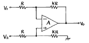
- Vo = K(V2 - V1)
- Vo = KV2 - (K + 1)V1
- Vo = (K + 1)V2 - KV1
- Vo = (K + 1)(V2 - V1)
(정답률: 알수없음)
7. 다음의 회로에서 출력 Vo는?
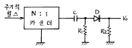
- 양(+)의 펄스
- 음(-)의 펄스
- 대칭 펄스
- 반파 대칭 펄스
(정답률: 알수없음)
8. 저 임피이던스 부하에서 고전류이득을 얻으려할 때 사용되는 증폭 방식은?
- 베이스 접지
- 에미터 팔로워
- 에미터 접지
- 캐스코우드 증폭기
(정답률: 알수없음)
9. L, C, R 직렬회로의 공진주파수에 대한 Q의 값은? (단, W 는 각속도)
- L/CR
- WL/R
- R/WC
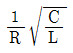
(정답률: 알수없음)
10. 다음 연산회로에서 전압이득(Vo/Vs)은?
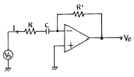
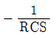
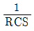
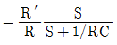
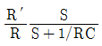
(정답률: 알수없음)
11. 다음 회로가 나타내는 전달특성은? (단, D는 이상적인 다이오드 이다.)
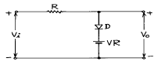
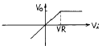
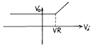
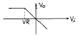
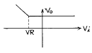
(정답률: 알수없음)
12. 변조도 60 %의 AM에 있어서 반송파의 평균 전력이 100W일 때 피변조파의 평균 전력은?
- 118 W
- 130 W
- 136 W
- 160 W
(정답률: 알수없음)
13. 다음 그림과 같은 회로의 전달 특성은? (단, VR1＜ VR2)
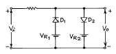
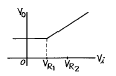
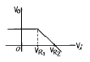
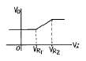
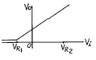
(정답률: 알수없음)
14. 그림은 무슨 회로인가?
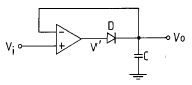
- Voltage follower
- Differentiator
- Peak detector
- Integrator
(정답률: 알수없음)
15. 이득이 40[㏈]인 저주파 증폭기가 10[%]의 왜율을 가지고 있을 때 이것을 1[%]로 개선하기 위해서는 대략 얼마의 전압 부궤환을 걸어 주어야 하는가?
- 60[㏈]
- 40[㏈]
- 30[㏈]
- 20[㏈]
(정답률: 알수없음)
16. 다음 J-K Flip-Flop의 입력신호의 주파수가 5[㎒]일 때 출력신호의 주파수는?
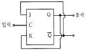
- 500[㎑]
- 2.5[㎒]
- 10[㎒]
- 25[㎒]
(정답률: 알수없음)
17. 디지털데이터를 디지털신호로 전송하는 회로 장치는?
- CODEC
- 변.복조회로
- DSU
- 전화
(정답률: 알수없음)
18. NAND 게이트로 구성된 SR 플립플롭에서 전의 상태를 유지하기 위해서는 SR이 어떤 경우일 때 인가?
- SR = 00일 때
- SR = 01일 때
- SR = 10일 때
- SR = 11일 때
(정답률: 알수없음)
19. 전압안정화 회로의 특성으로 가장 알맞는 것은?
- 온도가 변할 때 출력전압은 일정하다.
- 출력전압이 변할 때 부하전류는 일정하다.
- 입력전압이 변할 때 출력전압은 일정하다.
- 부하가 변할 때 출력전압은 일정하다.
(정답률: 알수없음)
20. 그림의 회로에서 V1=3V, Rf=450㏀, R1=150㏀ 일 때, 출력 전압 Vo는?
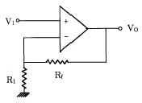
- 1〔V〕
- 12〔V〕
- 15〔V〕
- 18〔V〕
(정답률: 알수없음)
2과목: 방송통신 기기
21. 방송용으로 사용되는 컴퓨터 서버에 공통으로 필요한 기능으로 거리가 먼 것은?
- 시스템과 부가기록장치의 신뢰성과 보수성이 충분해야한다.
- 데이터의 입출력이 실시간으로 처리되므로 구성되는 네트워크가 데이터의 연속성을 보장해야 한다.
- 보존용 소재의 무작위 접근이 가능한 기능이 필요하다.
- 하드디스그의 용량은 최소로 선택하여도 화질, 음질 등은 조정실에서 보완하므로 크게 문제되지 않는다.
(정답률: 알수없음)
22. 다음중 위성 뉴스 취재 장치인 SNG는 무엇인가?
- Satellite News Gathering
- Satellite Node Guardline
- Satellite Numbers Gathering
- Satellite Numbers Guardsector
(정답률: 알수없음)
23. TV의 영상을 분해하고 조립하는 능력을 나타내는 파라메터(parameter)를 무엇이라고 하는가?
- 변조도
- 증폭도
- 분포도
- 해상도
(정답률: 알수없음)
24. 실용적인 비디오 시스템의 기본적인 4개의 구성요소를 든다면 어느것이 가장 적합한가?
- 카메라(Camera), 동기발생기(Sync generator), VTR(Video tape recoder), 모니터(Monitor)
- 마이크(Mike), 카메라(Camera), 케이블(Cable), 리코더(Recoder)
- 벡터스코프(Vectorscope), 정류기(Rectifier), 파형모니터(Waveform moniter), 전치증폭기(Pre-amp.)
- 스위쳐(Switcher), 믹서기(Mixer), 카메라(Camera), 녹화기(Recoder)
(정답률: 알수없음)
25. 다음 중 공진회로 이외의 다른 회로가 원인이 되어 목적 이외의 다른 고주파가 발진되어 정궤환에 의해 발생하는 현상은?
- 기생발진
- 궤환발진
- 공진발진
- 여진발진
(정답률: 알수없음)
26. 다음 중 시간영역 상에서 주로 파형을 측정하는데 사용되는 측정기는?
- Oscilloscope
- Spectrum Analyzer
- Network Analyzer
- Sweep Generator
(정답률: 알수없음)
27. 기존의 아날로그 지상파 TV방송 대비 디지털 지상파 TV방송의 장점 중 잘못 표현 된 것은?
- 동일한 주파수 대역폭내에서 다채널 서비스가 가능하여 주파수 이용 효율이 높다.
- 제작, 편집,송출시 신호의 열화가 적고 오류 정정이 쉬워 고품질 구현이 가능하다.
- 반사파에 의한 이중상 현상(Ghost)이 없다.
- 기존 지상파 아나로그 TV의 방송 구역을 유지하려면 동일 송신출력이 필요하다.
(정답률: 알수없음)
28. 표준(중파)방송에서 중간주파 증폭회로가 감도와 출력을 높이기 위하여 증폭하는 중간 주파수는?
- 5 [KHz]
- 10 [KHz]
- 455 [KHz]
- 900 [KHz]
(정답률: 알수없음)
29. 위성방송(DBS)을 수신하기 위해서 어떤 장치를 TV 셋트와 연결하는가?
- FM 튜너
- SET-TOP-BOX
- 아날로그 튜너
- 야기(yagi)안테나
(정답률: 알수없음)
30. 다음은 FM스테레오 방송에 대한 설명이다. 틀린 것은?
- 스테레오 방송이라도 FM 모노 수신기로 수신할 수 있다.
- 기준신호(pilot signal) 주파수로 19KHz를 사용한다.
- 스테레오 코더에서 L+R 신호와 L-R신호를 합성하여 복합 음성신호로 만들어 송신기에서 변조한다.
- 모노포닉 수신 일 때는 차 신호(L-R)만을 수신한다.
(정답률: 알수없음)
31. 위성에서 수신된 마이크로파의 높은 주파수를 저주파 신호로 변환하여 수신기로 보내주는 장치는?
- LNB
- Demodulator
- Emphasis
- Inverter
(정답률: 알수없음)
32. VTR를 재생할 때 헤드의 회전속도가 고르지못하거나 테이프의 주행속도가 고르지 못하여 영상의 시간적 변동이 생겨 화면이 흔들릴때 보정 해주는 방송장비는?
- T.B.C
- F.S
- A.D.C
- D.V.D
(정답률: 알수없음)
33. 다음중 방송국의 안테나를 설계할 때 고려해야할 특성과 거리가 먼 것은?
- 편파(Polarization)
- 복사각
- 최고사용가능주파수(MUF)
- 주파수대역폭
(정답률: 알수없음)
34. 다음중 음향 효과기가 아닌 것은?
- Equalizer
- Expander
- Noise Gate
- Amplfier
(정답률: 알수없음)
35. 종합유선방송(SO) 헤드엔드(H/E)에서 아나로그 지상파방송을 재전송하고자 한다. 안테나를 통하여 직접 수신된 아나로그 지상파TV 방송을 콤바이너장치에 입력하기 위해 사용하는 장치는?
- 신호처리기(Signal Processor)
- 변조기(Modulator)
- 다중화기(Multiplexer)
- 복조기(Demodulator)
(정답률: 알수없음)
36. 방송통신기기에 사용되는 측정 장비중에서 출력 신호의 주파수가 일정한 범위에서 반복하여 변화하는 신호발생기를 무엇이라고 하는가?
- 스펙트럼 아날리저
- 스위프 신호 발생기
- OTDR
- 벡터스코프
(정답률: 알수없음)
37. 컬러 TV에서 사용되는 3원색은?
- 적, 녹, 청
- 적, 황, 녹
- 적, 청, 자
- 청, 황, 녹
(정답률: 82%)
38. 위성방송을 수신하는 안테나의 종류가 아닌 것은?
- 평면 안테나
- 오프셋 파라볼라 안테나
- 야기 안테나
- 초접 파라볼라 안테나
(정답률: 알수없음)
39. 우리나라 아날로그 Color TV 방송방식은?
- PAL
- SECAM
- NTSC
- DVB-MHP
(정답률: 알수없음)
40. 다음중 TV방송 전파를 이용하여 TV방송과 함께 문자 또는 도형 형태의 정보제공이 가능한 뉴미디어는?
- 텔리텍스
- 텔리텍스트
- 정지화방송
- 비디오텍스
(정답률: 70%)
3과목: 방송미디어 공학
41. 다음 중 멀티미디어의 중요한 기술인 하이퍼미디어 기술을 사용하지 않은 것은?
- 인터넷
- 전자도서
- 화상회의
- 전자메뉴얼
(정답률: 알수없음)
42. 다음 중 뉴미디어에 속하지 않는 것은?
- 통신계
- 방송계
- 정보계
- 패키지계
(정답률: 알수없음)
43. 다음 중 전달미디어에 포함되지 않는 것은?
- 통신미디어
- 저장미디어
- 방송미디어
- 정보미디어
(정답률: 알수없음)
44. 다음의 TV 프로그램 중 즉시성이 가장 강한 프로그램은?
- 보도 프로그램
- 교양 프로그램
- 교육 프로그램
- 연예오락 프로그램
(정답률: 알수없음)
45. 영상시스템에서 화면전환이 이루어지는 기간은?
- 수직귀선기간
- 수평귀선기간
- 수평주사기간
- 수직주사기간
(정답률: 알수없음)
46. 다음 중 멀티미디어 응용 서비스와 거리가 먼 것은?
- 화상회의
- 비디오
- 전자도서관
- 주문형 뉴스
(정답률: 알수없음)
47. 음압(sound pressure)측정에는 dyne/㎝2 단위가 사용되는데, 이를 데시벨 단위(dB )로 표시할 경우 얼마를 기준 값으로 하는가?
- 0.0002 dyne/cm2
- 0.0004 dyne/cm2
- 0.0006 dyne/cm2
- 0.0008 dyne/cm2
(정답률: 알수없음)
48. 다음 중 디지털 오디오 부호화 방식이 아닌 것은?
- MPEG-1
- MPEG-2
- JPEG
- Dolby AC-3
(정답률: 알수없음)
49. 방송용 녹음기의 음성신호 샘플링 주파수는?
- 32KHz
- 44.1KHz
- 16KHz
- 48KHz
(정답률: 알수없음)
50. 국내 아날로그 지상파 TV의 영상신호 대역은?
- 0.25[MHz]
- 1.25[MHz]
- 4.2[MHz]
- 4.5[MHz]
(정답률: 알수없음)
51. 우리나라 NTSC 방식에서 신호 구성 요소로 틀린 것은?
- 수평동기신호
- 수직동기신호
- 색신호
- 파일롯 신호
(정답률: 알수없음)
52. 다음 중에서 정보재생 혹은 획득의 수단으로 사용하는 미디어와 거리가 먼 것은?
- 종이
- 카메라
- 스크린
- 하드디스크
(정답률: 알수없음)
53. 국내 지상파 디지털 TV 방송에 적용되는 영상 및 오디오 압축방식은?
- 영상: MPEG-2 오디오: MPEG-2
- 영상: MPEG-2 오디오: AC-3
- 영상: MPEG-1 오디오: MP3
- 영상: MPEG-1 오디오: MPEG-2
(정답률: 알수없음)
54. 국내 아날로그 방식의 중파방송과 TV 영상에서 사용하는 변조 방식으로 사용되는 것은?
- R-AM, TV-AM
- R-FM, TV-AM
- R-AM, TV-FM
- R-FM, TV-FM
(정답률: 알수없음)
55. 텔레비젼 수상관의 감마 왜곡 현상을 사전에 보상하기 위하여 카메라에서 감마 보상하는 방법을 잘 나타낸 그래프는? (단, X축(수평축):빛의 세기,Y축(수직축):카메라의 출력)
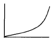
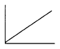
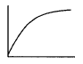
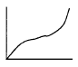
(정답률: 알수없음)
56. MPEG2 데이터의 구조를 최하위층부터 최상위층까지 바르게 기술한 것은?
- 블록→매크로 블록→픽쳐→슬라이스→GOP→시퀀스
- 픽쳐→블록→매크로 블록→슬라이스→GOP→시퀀스
- 슬라이스→블록→매크로 블록→픽쳐→GOP→시퀀스
- 블록→매크로 블록→슬라이스→픽쳐→GOP→시퀀스
(정답률: 알수없음)
57. 양자화(Quantization)에 관한 설명중 거리가 먼 것은?
- 양자화 에러를 줄이기 위해서는 비트 수를 늘린다.
- 비트 수를 증가하면 S/N비는 증가한다.
- 양자화 값과 샘플링 값의 차가 작아지면 양자화 에러는 커진다.
- 양자화잡음을 줄이기 위해서 압신기를 사용한다.
(정답률: 알수없음)
58. 조명의 목적이 아닌 것은?
- 입체감과 질감을 만든다.
- 반향(echo)을 얻는다.
- 필요한 밝기를 얻는다.
- 컬러 바란스를 구한다.
(정답률: 60%)
59. 다음중 방송계 미디어의 종류가 아닌 것은?
- DBS
- 영상회의
- DAB
- CATV
(정답률: 알수없음)
60. 국내 지상파 아날로그 TV 방송에 관한 설명이다. 거리가 먼 것은?
- 비월주사방식으로 1 frame을 2회에 걸쳐 주사한다.
- 화면의 비율은 4:3 또는 16:9 이다.
- 음성의 변조방식은 FM변조를 한다.
- 채널당 주파수 대역폭은 6㎒이다.
(정답률: 알수없음)
4과목: 방송통신 시스템
61. 라디오 방송 시스템에서 송출되는 변조방식이 아닌 것은?
- 주파수변조방식
- 전력변조방식
- 펄스변조방식
- 진폭변조방식
(정답률: 알수없음)
62. 다음중 2개 이상의 신호를 증폭하는 경우 증폭기의 3차 비직선 왜곡에 의해서 다른 신호 내용이 겹치는 현상은?
- 상호변조(inter modulation)
- 비트(beat) 방해
- 혼변조(cross modulation)
- CTB(composit triple beat)
(정답률: 알수없음)
63. 아래의 빈칸에 알맞은 것은?
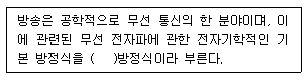
- 맥스웰
- 드브로이
- 가우시안
- 암페어
(정답률: 알수없음)
64. 일반적으로 사용되는 방송용 송신기 종단에는 안테나와 연결되는 급전선이 있다. 송신기와 급전선을 정합(Matching)하기 위한 네트워크 회로는 어떤 필터에 해당 되는가?
- Low Pass Filter
- High Pass Filter
- Band Pass Filter
- Band Rejection Filter
(정답률: 알수없음)
65. 무궁화위성을 이용한 디지털 위성방송은 수신 주파수가 12GHz대 방송대역을 사용한다. 이 대역의 명칭은?
- Ka Band
- Ku Band
- X Band
- C Band
(정답률: 알수없음)
66. 지상파 방송을 위하여 사용하고 있는 전송 방식이 VSB(Vestigial Side Band)방식인데 이것을 사용하는 이유를 가장 적절하게 설명한 것은?
- SSB(Single Side Band)보다 대역폭 효율이 더 높기 때문에
- SSB보다 대역폭 효율이 더 높고, 위상 왜곡이 적기 때문에
- DSB(Double Side Band)보다 대역폭 효율이 더 높고, 위상 왜곡이 적기 때문에
- DSB보다 화질과 음질이 좋기 때문에
(정답률: 알수없음)
67. 접시형(parabola) 안테나의 이득을 결정하는 요소가 아닌 것은?
- 주파수
- 안테나 직경
- 파장
- 안테나의 높이
(정답률: 알수없음)
68. 다음의 빈칸에 알맞는 것은?
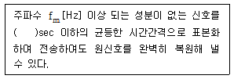
- 1/fm
- 1/2fm
- 2/fm
- 3/fm
(정답률: 알수없음)
69. 광케이블 종류에서 널리 사용되고 있는 단일모드(single mode) 광케이블의 직경은?
- 6㎛
- 9 ㎛
- 50 ㎛
- 60 ㎛
(정답률: 알수없음)
70. 다음 방송위성에 관한 설명 중 틀린 것은?
- 정지위성은 지구 표면에서 약 36,000km 높이에 있다.
- 서비스지역 내에서 위성을 볼 때의 앙각이 낮을수록 도시의 높은 빌딩에 있어서도 전파의 수신이 잘된다.
- 개별수신이란 방송위성업무의 우주국에서 발사된 전파를 수신하는데 있어 간단한 가정용설비를 갖는 설비로 수신하는 것이다.
- 정지위성은 지구의 자전과 같은 주기, 같은 방향으로 회전하면 지구상에서 위성을 보아 언제나 하늘 한 곳에 정지해 있는 것처럼 보인다.
(정답률: 알수없음)
71. FM 스테레오 방송에 대하여 틀린 것은?
- (L+R)채널은 반송파를 FM 변조한다.
- (L-R)채널은 부반송파를 FM 변조한다.
- (L-R)부반송파의 주파수는 38kHz이다.
- 파일롯트 부반송파의 주파수는 19kHz이다.
(정답률: 알수없음)
72. 다음과 같은 기능 및 특징을 갖는 CATV 설비를 무엇이라고 하는가?
- 헤드엔드 설비
- 분배 설비
- 수신 설비
- 스튜디오 설비
(정답률: 알수없음)
73. 국내에서 사용하고 있는 디지털유선방송 상하향 대역 분리 방식은?
- Sub Split 방식
- Mid Split 방식
- High Split 방식
- Extended Mid Split 방식
(정답률: 알수없음)
74. 국내에서 사용하고 있는 TV 음성다중방식으로 ( )방식은 FM-FM 방식보다 스테레오일 때 좌우 분리도가 우수하며 2개국어일 때는 Crosstalk, S/N비 등 전반적인 특성이 우수하다. ( )에 알맞는 내용은?
- AM-FM 방식
- FM-FM 방식
- 2 Carrier 방식
- DPSK 디지털방식
(정답률: 알수없음)
75. FM 방송 시스템에서 사용하는 프리엠파시스(Preemphasis) 방법에 대한 설명으로 맞지 않는 것은?
- 고주파 대역 통과 특성을 갖는 필터를 사용한다.
- 잡음에 대한 영향을 감소시키기 위하여 사용한다.
- 수신기에서 사용한다.
- 간단한 RC 회로로 구현할 수 있다.
(정답률: 알수없음)
76. CATV방송 시스템의 구성요소가 아닌 것은?
- 송출계의 헤드엔드
- 전송계의 전송장치
- 가입자계의 옥내 시설
- 연주소
(정답률: 알수없음)
77. AES/EBU 디지털 오디오 신호는 약 6MHz까지의 주파수를 포함하고 있으므로 고품질이 요구되는 경우나, 전송거리가 100m를 넘는 경우는 불평형 동축선을 사용해야 하는데 이 경우 몇 牆의 불평형 동축선을 사용해야 하는가?
- 50Ω
- 55Ω
- 70Ω
- 75Ω
(정답률: 알수없음)
78. 다음 중 방송망의 형태와 관계없는 것은?
- CATV
- 패킷 무선망
- 위성망
- ISDN
(정답률: 알수없음)
79. 아날로그 TV 채널의 9번 주파수는 186MHz~192MHz 이다. 여기서 음성 반송주파수는 얼마인가?
- 185.75MHz
- 191.75MHz
- 184.75MHz
- 190.75MHz
(정답률: 알수없음)
80. 다음의 주파수대중 방송에 사용되지 않는 것은?
- MF
- VHF
- SHF
- EHF
(정답률: 알수없음)
5과목: 전자계산기 일반 및 방송설비기준
81. 다음 중에서 8비트로 1의 보수 표현 방법에 의하여 +10과 -10을 올바르게 표현한 것은 어느 것인가?
- +10 : 00001010, -10 : 11110101
- +10 : 00001010, -10 : 11111010
- +10 : 10001010, -10 : 11110101
- +10 : 10001010, -10 : 11111010
(정답률: 알수없음)
82. 다음 각 자료형 중에서 가장 적은 비트의 수를 필요로 하는 것은?
- 실수형 자료(real type)
- 정수형 자료(integer type)
- 문자형 자료(character type)
- 논리형 자료(boolean type)
(정답률: 알수없음)
83. 다음 중 중앙처리장치(CPU)의 동작속도에 가장 큰 영향을 미치는 것은?
- 레지스터의 종류
- 프로그램 카운터길이
- 외부버스의 길이
- 클럭주파수
(정답률: 알수없음)
84. 컴퓨터의 메모리 크기 단위 중에서 가장 큰 것은?
- KB
- MB
- GB
- TB
(정답률: 알수없음)
85. 프로그램 카운터와 명령의 주소부분을 더해 유효 주소로 결정하는 주소지정방식은?
- Base Addressing
- Index Addressing
- Immediate Addressing
- Relative Addressing
(정답률: 알수없음)
86. 다음중 방송국의 허가 또는 승인을 받거나 등록을 한 법인의 대표자 또는 방송편성책임자의 결격 사유가 아닌 자는?
- 대한민국 국적을 가지지 않은 자
- 미성년자
- 벌금이상의 형을 선고받고 그 집행이 종료되거나 그 집행을 받지 아니하기로 확정된 후 4년이 경과된 자
- 한정치산자
(정답률: 알수없음)
87. 다음 중 방송채널사용사업의 등록에 있어서 방송위원회에 제출해야 할 서류가 아닌 것은?
- 사업자명
- 대표자 및 편성책임자
- 방송프로그램 공급분야
- 대표자의 경력서
(정답률: 알수없음)
88. 다음 debugging과 관계가 적은 것은?
- coding
- single step
- trace
- dump
(정답률: 알수없음)
89. 방송국의 송신공중선으로부터 발사되는 강한 전파로 인하여 다른 전파와의 간섭이 일어나는 지역을 무엇이라고 하는가?
- 방송구역
- 블랭킷에어리어
- 실효복사전력
- 전파혼신구역
(정답률: 알수없음)
90. 다음의 주파수 범위로서 틀린 것은?
- 저주파수 : 300Hz 미만의 주파수
- 음성주파수 : 300Hz이상 3400Hz이하의 주파수
- 고주파수 : 3400Hz 이하의 주파수
- 전파 : 인공적인 유도로 공간에 퍼져가는 전자파로서 국제전기통신연합이 정한 범위안의 주파수
(정답률: 알수없음)
91. 다음 중 음의 정수를 연산하기 가장 쉬운 것부터 나열한 것은?
- 부호와 절대치 → 1의 보수 → 2의 보수
- 부호와 절대치 → 2의 보수 → 1의 보수
- 1의 보수 → 2의 보수 → 부호와 절대치
- 2의 보수 → 1의 보수 → 부호와 절대치
(정답률: 알수없음)
92. 인터럽트 발생원인이 아닌 것은?
- 정전
- 조작자의 의도적인 조작
- 0으로 나누었을 때
- 임의의 부프로그램에 대한 호출
(정답률: 알수없음)
93. 다음 중 방송국의 준공기한을 연장하고자 하는자는 누구에게 연장신청서를 제출하는가?
- 정보통신부장관
- 방송위원회위원장
- 문화관광부장관
- 과학기술부장관
(정답률: 알수없음)
94. 방송위원회의 직무내용이 아닌 항목은?
- 방송프로그램 및 방송광고의 운용ㆍ편성에 관한 사항
- 방송에 관한 연구조사 및 지원에 관한 사항
- 방송발전기금의 조성 및 관리ㆍ운용의 기본계획에 관한 사항
- 방송 시설공사의 설계ㆍ감리용역에 관한 사항
(정답률: 알수없음)
95. 디지털 지상파 텔레비전방송의 공중선 허용편차는 상한과 하한 각각 얼마씩인가?
- 상한 5%, 하한 5%
- 상한 5%, 하한 10%
- 상한 10%, 하한 5%
- 상한 10%, 하한 10%
(정답률: 알수없음)
96. 다음의 전파형식 중 가장 넓은 대역폭을 필요로 하는 것은?
- 10KA3EGN
- 15K0A8EHN
- 180KF3EGN
- 260KF8EHF
(정답률: 알수없음)
97. 국내 FM방송의 최대 주파수 편이는 얼마인가?
- ±75KHz
- ±50KHz
- ±25KHz
- ±7.5KHz
(정답률: 알수없음)
98. 종합유선방송의 구내전송로 동축케이블의 증폭기 또는 분배기 등에서 권고되는 임피던스는 얼마인가?
- 300Ω
- 50Ω
- 75Ω
- 100Ω
(정답률: 알수없음)
99. 인터럽트 발생시 프로그램의 복귀 번지를 저장하는 것은?
- Stack
- Queue
- Deque
- PC
(정답률: 알수없음)
100. CPU에서 논리연산 또는 산술연산을 행하였을 때 그 결과의 상태(Status)를 나타내는 레지스터는?
- 인덱스 레지스터
- 상태 레지스터
- 명령 레지스터
- 스택 포인터
(정답률: 알수없음)